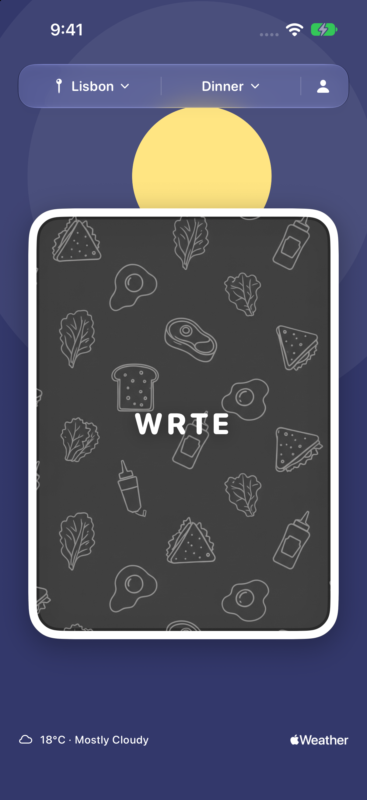
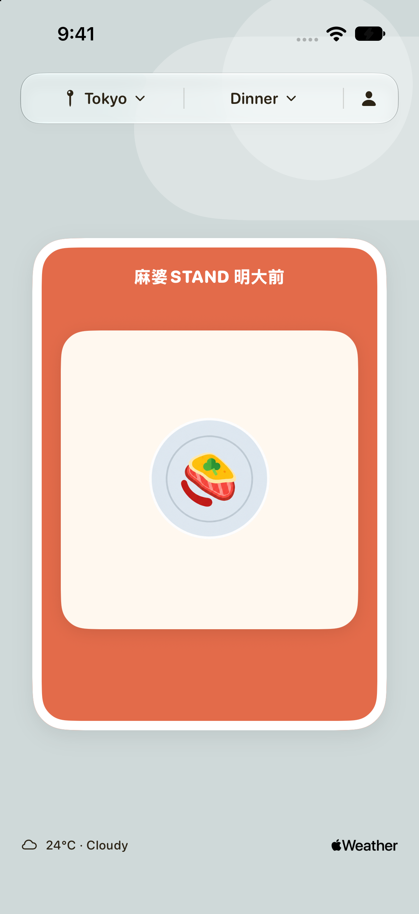
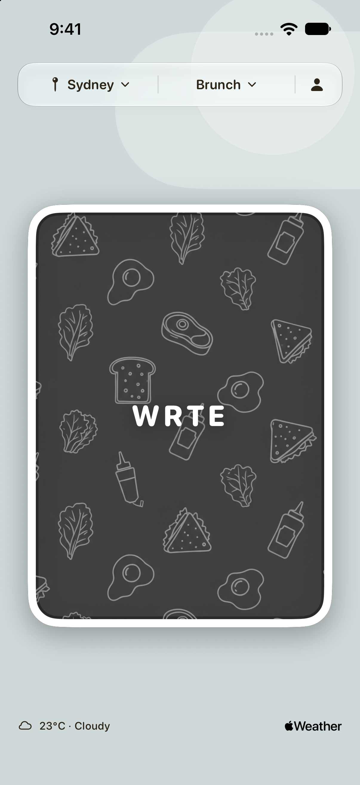

What to Eat
A good meal.
For this moment.
Your day sets the scene. WRTE deals the card.
Get WRTE on the App Store ↗✦ Pick a city♡ Save your favorites↗ Go eat
Inside WRTE



A little night-time inspiration.
Actual app screenshots · Weather at capture time
Less scrolling. More eating.
Pick a city and a meal in WRTE. Draw, save, go.